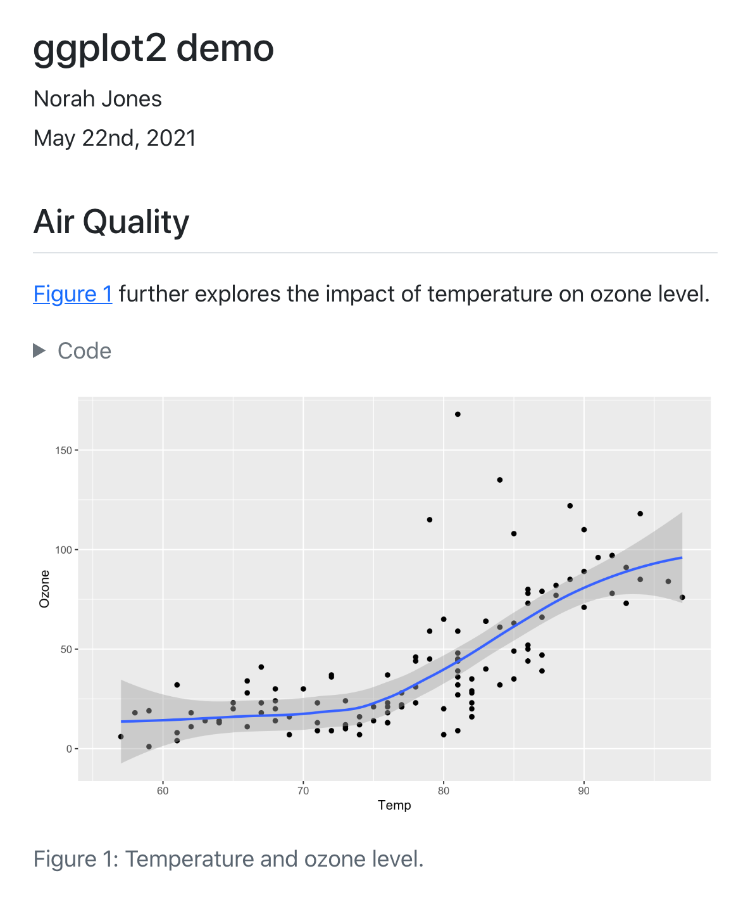

Using R
Overview
Quarto is a multi-language, next generation version of R Markdown from RStudio, with many new features and capabilities. Like R Markdown, Quarto uses Knitr to execute R code, and is therefore able to render most existing Rmd files without modification.
We’ll start by covering the basics of Quarto, then delve into the differences between Quarto and R Markdown in the sections on Chunk Options and Output Formats below.
Code Blocks
Code blocks that use braces around the language name (e.g. ```{r}) are executable, and will be run by Quarto during render. Here is a simple example:
---
title: "ggplot2 demo"
author: "Norah Jones"
date: "5/22/2021"
format:
html:
code-fold: true
---
## Air Quality
@fig-airquality further explores the impact of temperature on ozone level.
```{r}
#| label: fig-airquality
#| fig-cap: "Temperature and ozone level."
#| warning: false
library(ggplot2)
ggplot(airquality, aes(Temp, Ozone)) +
geom_point() +
geom_smooth(method = "loess")
```You’ll note that there are some special comments at the top of the code block. These are cell level options that make the figure cross-referenceable.
This document results in the following rendered output:

You can produce a wide variety of output types from executable code blocks, including plots, tabular output from data frames, and plain text output (e.g. printing the results of statistical summaries).
There are many options which control the behavior of code execution and output, you can read more about them in the article on Execution Options.
In addition to code blocks which interupt the flow of markdown, you can also include code inline. Read more about inline code in the Inline Code article.
Rendering
When a Quarto document is rendered, R code blocks are automatically executed. You can render Quarto documents in a variety of ways:
Using the Render button in RStudio:

The Render button will render the first format listed in the document YAML. If no format is specified, then it will render to HTML.
From the system shell using the
quarto rendercommand:Terminal
quarto render document.qmd # all formats quarto render document.qmd --to pdf quarto render document.qmd --to docxNote that the target file (in this case
document.qmd) should always be the very first command line argument.The
rendercommand will render all formats listed in the document YAML. If no formats are specified, then it will render to HTML. You can also provide the--toargument to target a specific format.From the R console using the quarto R package:
library(quarto) quarto_render("document.qmd") # all formats quarto_render("document.qmd", output_format = "pdf")The function
quarto_render()is a wrapper aroundquarto renderand by default, will render all formats listed in the document YAML.Note that the Quarto R package is a convenience for command line rendering from R, and is not required for using Quarto with R.
Installation
To use Quarto with R, you should install the rmarkdown R package:
install.packages("rmarkdown")Installation of the rmarkdown package will also install the knitr package so you will have everything required to render documents containing R code.
Quarto will select a version of R by looking on the system PATH. In addition, on Windows when R is not found on the PATH, the registry will be scanned for the current R version. You can override the version of R used by Quarto by setting the QUARTO_R environment variable.
RStudio
RStudio v2022.07 and later includes support for editing and preview of Quarto documents (the documentation below assumes you are using this build or a later version).
If you are using Quarto within RStudio it is strongly recommended that you use the latest release of RStudio (v2023.12).
You can download RStudio v2023.12 from https://posit.co/download/rstudio-desktop/.
Creating Documents
Use the File : New File : Quarto Document… command to create new Quarto documents:

Render and Preview
Use the Render button to preview documents as you edit them:
If you prefer to automatically render whenever you save you can check the Render on Save option on the editor toolbar.
The preview will appear alongside the editor:

The preview will update whenever you re-render the document. Side-by-side preview works for both HTML and PDF output.
Projects
If you want to create a new project for a Quarto document or set of documents, use the File : New Project… command, specify New Directory, then choose Quarto Project:
![A section of the 'New Project Wizard' menu from Rstudio. This section is titled 'Create Quarto Project'. The Quarto logo is displayed on the left. ON the right are fields for 'Type', 'Directory name', and 'Create project as subdirectory of:'. Underneath that are options for 'Engine', 'Create a git repository', and 'Use renv with this project'. The option for 'Engine' is set to 'Knitr'. There are buttons for 'Create Project' and 'Cancel' arranged side-by-side in the bottom right of the window. There is an option to 'Open in new session' in the button left corner.](../..\docs/tools/images/rstudio-new-knitr-project.png)
You can use this UI to create both vanilla projects as well as websites and books. Options are also provided for creating a git repository and initializing an renv environment for the project.
VS Code
The Quarto Extension for VS Code provides a variety of tools for working with .qmd files in VS Code. The extension integrates directly with the R Extension to provide the following R-specific capabilities:
- Code completion
- Cell execution
- Contextual help
You can install the VS Code extension by searching for ‘quarto’ in the extensions panel or from the extension marketplace.
The VS Code extension includes a Quarto: Preview command that can be accessed via the Command Palette, the keyboard shortcut , or a Preview button in the editor. After rendering, a preview is displayed in a pane within VS Code alongside your document.
You can read more about using VS Code in Tools: VS Code.
Emacs
The quarto-mode MELPA package is an Emacs mode for editing Quarto documents. Install quarto-mode as follows:
M-x refresh-package-contents
M-x install-package
quarto-modeIf you have ESS, quarto-mode will make use of it for executing R code.
Use M-x quarto-preview to start a quarto preview server that watches quarto content for changes and automatically refreshes it. If the current buffer has an associated file that exists in a quarto project, the command will preview the entire project. Otherwise, it will preview the specific file.
Chunk Options
One important difference between R Markdown documents and Quarto documents is that in Quarto chunk options are typically included in special comments at the top of code chunks rather than within the line that begins the chunk. For example:
```{r}
#| echo: false
#| fig-cap: "Air Quality"
library(ggplot2)
ggplot(airquality, aes(Temp, Ozone)) +
geom_point() +
geom_smooth(method = "loess", se = FALSE)
```Quarto uses this approach to both better accommodate longer options like fig-cap, fig-subcap, and fig-alt as well as to make it straightforward to edit chunk options within more structured editors that don’t have an easy way to edit chunk metadata (e.g. most traditional notebook UIs).
Note that if you prefer it is still possible to include chunk options on the first line (e.g. ```{r, echo = FALSE}). That said, we recommend using the comment-based syntax to make documents more portable and consistent across execution engines.
Chunk options included this way use YAML syntax rather than R syntax for consistency with options provided in YAML front matter. You can still however use R code for option values by prefacing them with !expr. For example:
#| fig-cap: !expr 'paste("Air", "Quality")'the !expr syntax is an example of a YAML “tag” literal, and it can be unintuitive. !expr needs to be followed by a single YAML “flow scalar”: see the YAML spec for details on how double-quoted, single-quoted, and unquoted strings work.
Chunk Labels
You can set a label for a code chunk with the label option:
```{r}
#| label: convert
airquality$TempC <- (5 / 9) * (airquality$Temp - 32)
```Unless you want to specify a cross-reference avoid using the reserved cross-reference prefixes for chunk labels.
Output Formats
Another difference between R Markdown and Quarto is related to output formats. Quarto includes many more built in output formats (and many more options for customizing each format). Quarto also has native features for special project types like Websites, Books, and Blogs (rather than relying on external packages).
To use a format in Quarto you use the format key rather than the output key as you did in R Markdown. Here’s a comparison of equivalent format specifications:
R Markdown
title: "My Document"
output:
html_document:
toc: true
number_sections: true
css: styles.cssQuarto
title: "My Document"
format:
html:
toc: true
number-sections: true
css: styles.cssOne source of the difference in syntax is that Quarto is more closely aligned with Pandoc format names and options (thus the use of - as a word separator rather than _).
See the listing of all supported formats along with their user guides and reference pages for more details.
See the articles on creating Websites, Books, and Blogs for additional details on more advanced output formats.
Data Frames
You can control how data frames are printed by default using the df-print document option. Available options include:
| Option | Description |
|---|---|
default |
Use the default S3 method for the data frame. |
kable |
Markdown table using the knitr::kable() function. |
tibble |
Plain text table using the tibble package. |
paged |
HTML table with paging for row and column overflow (implemented using rmarkdown::paged_table()) |
For example, here we specify that we want paged printing for data frames:
---
title: "Document"
format:
html:
df-print: paged
---Knitr Options
If you are using the Knitr cell execution engine, you can specify default document-level Knitr chunk options in YAML. For example:
---
title: "My Document"
format: html
knitr:
opts_chunk:
collapse: true
comment: "#>"
R.options:
knitr.graphics.auto_pdf: true
---You can additionally specify global Knitr options using opts_knit.
The R.options chunk option is a convenient way to define R options that are set temporarily via options() before the code chunk execution, and immediately restored afterwards.
In the example above, we establish default Knitr chunk options for a single document. You can also add shared knitr options to a project-wide _quarto.yml file or a project-directory scoped _metadata.yml file.
Caching
The Knitr Cache operates at the level of individual cells rather than the entire document. While this can be very convenient, it also introduced some special requirements around managing the dependencies between cells.
You can enable the Knitr cache at the document or project level using standard YAML options:
---
title: "My Document"
format: html
execute:
cache: true
---You can also enable caching on a per-cell basis (in this you would not set the document level option):
```{r}
#| cache: true
summary(cars)
```There are a variety of other cell-level options that affect Knitr caching behavior. You can learn about them in the Knitr cell options reference. Another excellent resource is Yihui Xie’s article on cache invalidation.
Rendering
You can use quarto render command line options to control caching behavior without changing the document’s code. Use options to force the use of caching on all chunks, disable the use of caching on all chunks (even if it’s specified in options), or to force a refresh of the cache even if it has not been invalidated:
Terminal
# use a cache (even if not enabled in options)
quarto render example.qmd --cache
# don't use a cache (even if enabled in options)
quarto render example.qmd --no-cache
# use a cache and force a refresh
quarto render example.qmd --cache-refresh Alternatives
If you are using caching to mitigate long render-times, there are some alternatives you should consider alongside caching.
Disabling Execution
If you are working exclusively with prose / markdown, you may want to disable execution entirely. Do this by specifying the enabled: false execute option For example:
---
title: "My Document"
format: html
execute:
enabled: false
---Note that if you are authoring using Jupyter .ipynb notebooks (as opposed to plain-text .qmd files) then this is already the default behavior: no execution occurs when you call quarto render (rather, execution occurs as you work within the notebook).
Freezing Execution
If you are working within a project and your main concern is the cumulative impact of rendering many documents at once, consider using the freeze option.
You can use the freeze option to denote that computational documents should never be re-rendered during a global project render, or alternatively only be re-rendered when their source file changes:
execute:
freeze: true # never re-render during project renderexecute:
freeze: auto # re-render only when source changesNote that freeze controls whether execution occurs during global project renders. If you do an incremental render of either a single document or a project sub-directory then code is always executed. For example:
Terminal
# render single document (always executes code)
quarto render document.qmd
# render project subdirectory (always executes code)
quarto render articlesLearn more about using freeze with projects in the article on managing project execution.